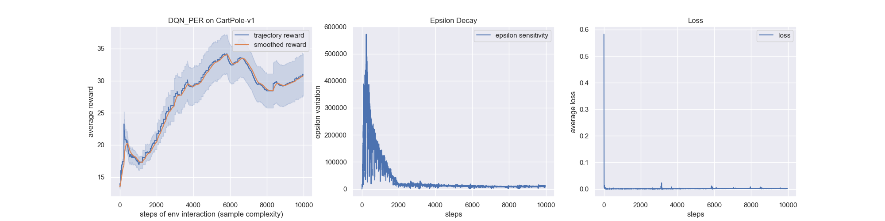
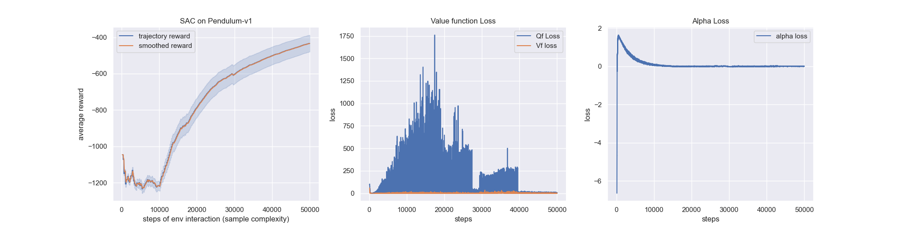
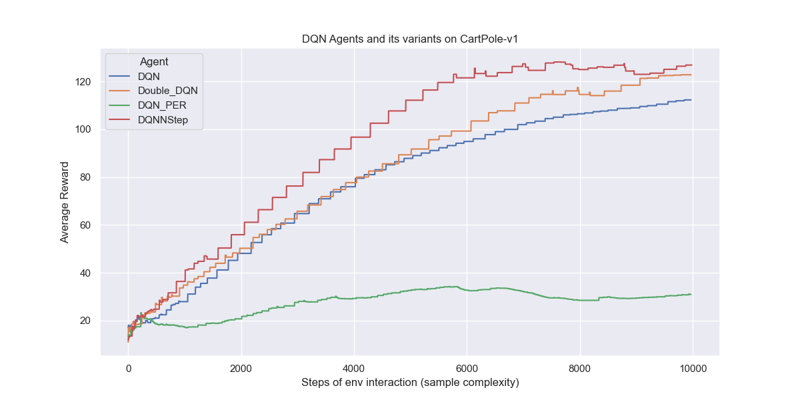
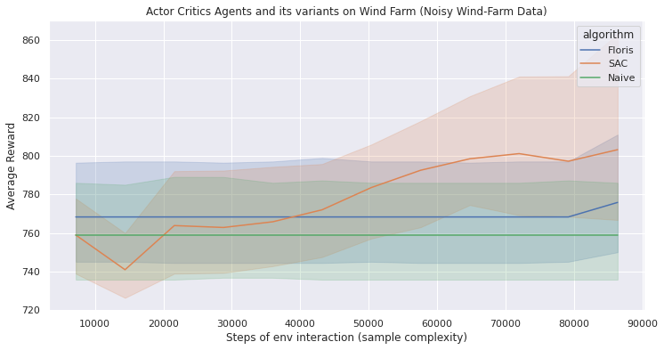

Deep Reinforcement Learning-WindFarm
Human-level control through deep reinforcement learning
By Nadhir Hassen in Deep Learning Reinforcement Learning Hyperparameters Optimization Wind Farm
February 1, 2022
Introduction
We investigate and improve Reinforcement Learning instability which causes: the correlations present in the sequence of observations, the fact that small updates to $Q$ may significantly change the policy and therefore change the data distribution, and the correlations between the action-values ($Q$) and the target values $r + \gamma \max_{a'} Q(s', a')$.
The authors suggest two key ideas to address these instabilities with a novel variant of Q-learning: Replay buffer and Fixed Q-target.
Uniformly random sampling from Experience Replay Memory
Reinforcement learning agent stores the experiences consecutively in the buffer, so adjacent ($s, a, r, s'$) transitions stored are highly likely to have correlation. To remove this, the agent samples experiences uniformly at random from the pool of stored samples $\big( (s, a, r, s') \sim U(D) \big)$. See sample_batch method of ReplayBuffer class for more details.
Fixed Q-target
DQN uses an iterative update that adjusts the action-values ($Q$) towards target values that are only periodically updated, thereby reducing correlations with the target; if not, it is easily divergy because the target continuously moves. The Q-learning update at iteration $i$ uses the following loss function:
$$ \begin{equation} \begin{split} L_i(\theta_i) = \mathbb{E}_{(s,a,r,s')}\big[ \big( r + \gamma \max _{a'} Q(s',a';\theta_i^-) - Q(s, a; \theta_i) \big)^2 \big] \end{split} \end{equation} $$
in which $\gamma$ is the discount factor determining the agent’s horizon, $\theta_i$ are the parameters of the Q-network at iteration $i$ and $\theta_i^-$ are the network parameters used to compute the target at iteration $i$. The target network parameters $\theta_i^-$ are only updated with the Q-network parameters ($\theta_i$) every C steps and are held fixed between individual updates. ($C = 200$ in CartPole-v0)
For more stability: Gradient clipping
The authors also found it helpful to clip the error term from the update $r + \gamma \max_{a'} Q(s', a'; \theta_i^-) - Q(s,a,;\theta_i)$ to be between -1 and 1. Because the absolute value loss function $|x|$ has a derivative of -1 for all negative values of x and a derivative of 1 for all positive values of x, clipping the squared error to be between -1 and 1 corresponds to using an absolute value loss function for errors outside of the (-1,1) interval. This form of error clipping further improved the stability of the algorithm.
Benchmark Results
1. Environements: CartPole and Pendulum for Classic Control and Robotics
Below shows various RL algorithms successfully learning discrete action game Cart Pole or continuous action game Pendulum. We record the average result from running the algorithms with 3 random seeds is shown with the shaded area representing plus and minus 1 standard deviation.
2. Policy Gradients Algorithm Experiements
Below shows the performance of Actor Critic models such as DDPG, PPO, SAC and TD3 including learning acceleration methods using demonstrations for treating real applications with sparse rewards.
The results replicate the results found in the papers. In the next stage, I plan to show how adding HER can allow an agent to solve problems that it otherwise would not be able to solve at all. Note that the same hyperparameters were used within each pair of agents and so the only difference between them was whether hindsight was used or not.
 
3. DQN Learning Algorithm Experiments
The results of DQN’s show how we could avoid instable or even divergent nonlinear function approximator presented in the action-value Q function. The instability is more often caused by the presence of correlation in the sequence of observations, DQN suggest two key ideas to address these instabilities with a novel variant of Q-learning: Replay buffer and Fixed Q-target.
The results replicate the results found in the papers for DQN, DoubleDQN, PrioritizedExperienceReplay and N-stepLearning.

WindFarm Environements for Active Wake Control
Below shows various RL algorithms successfully learning discrete action. We record the average result from running the algorithms with 4 random seeds is shown with the shaded area representing plus and minus 1 standard deviation. Hyperparameters used are large and can be optimized.
